Developer Portfolio
Unity / C#, Game, AR, Hardware
김택권
KIM TAEK KWON
Unity와 C#으로 게임과 인터랙티브 콘텐츠를 개발합니다. 모바일 출시와 라이브서비스, AR, 하드웨어 연동 경험이 있습니다.
01 / 23
Career Summary
Unity 중심의 개발 경험
게임, 인터랙티브 콘텐츠, AR과 장치 연동.
클라이언트 제작부터 모바일 출시와 라이브서비스까지 경험했습니다.
13년 4개월총 개발 경력, 모바일과 게임, 웹 클라이언트
80여종교육용 앱 제작, 출시, 유지보수
Unity 게임우주좀비 제작과 라이브서비스
AR / IoT사진 인식과 외부 장치 연동
그로비교육태블릿 기반 교육 콘텐츠 개발과 운영, 개발 프로세스 구축
천재교육 / 천재교과서교육용 모바일 앱과 게임 다수 제작, 출시, 유지보수
우주마켓게임 개발팀 팀장, Unity 2D 우주좀비 제작과 라이브서비스
02 / 23
Tech Stack
여러 분야에서 쌓은
개발 경험
Unity 게임과 교육 콘텐츠를 중심으로
앱과 웹 화면, API 서버, 하드웨어 연동까지 개발했습니다.
Unity / C#
게임, 인터랙티브 콘텐츠
Game / Live Service
우주좀비 제작과 라이브서비스
Mobile
Android, iOS 출시와 마켓 대응
AR / Vision
AR Foundation, OpenCV
Hardware
Arduino, ESP32, Serial, MQTT
Production
팀 빌딩, 개발 프로세스 구축
Frontend
Flutter 앱, Flame 게임, 웹 화면
Backend
FastAPI, REST API, WebSocket
03 / 23
Project Map
프로젝트 목차
Unity 콘텐츠와 우주좀비, 하드웨어 연동을 먼저 소개하고
이어서 Flutter 게임과 앱, AI/RAG 프로젝트를 보여줍니다.
- Unity Content그로비교육, 천재교육/천재교과서, AR과 교보재 연동
- Unity Game우주좀비, Unity 2D 제작과 라이브서비스 (2015)
- HardwareUnity, Serial, Arduino, MQTT-SSL, ESP32
- Flutter GamesRummi Poker, Stone Match, 순서대로 탭탭, AI 활용 개발 환경
- Apps / AI / ArchiveFlutter 앱 프로젝트 4종, 관광 챗봇, 이전 멀티플랫폼 작업
04 / 23
Company Projects, Grovy Education
그로비교육 Unity 콘텐츠
태블릿 기반 유아 교육 콘텐츠를 개발하고 운영했습니다.
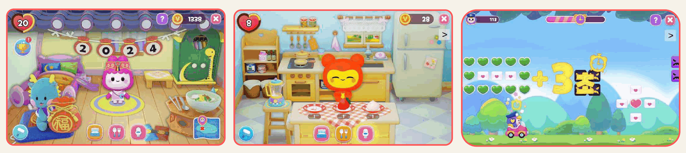
마이 슈퍼 브이
캐릭터 상호작용, 생활습관, 체험 학습, 미니 게임.
영상
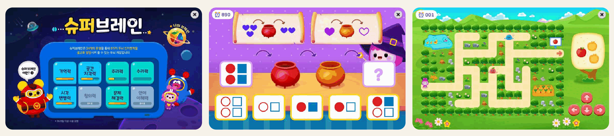
슈퍼 브이 브레인
기억력, 공간 지각력, 추리력, 문제 해결력 영역별 게임.
영상

예술 놀이터
피아노, 드럼, 그림 그리기, 스티커 꾸미기 활동.
05 / 23
Company Projects, Chunjae
천재교육 / 천재교과서 Unity 콘텐츠
책, QR, AR, 블루투스 교보재와 연동되는 교육용 모바일 앱을 제작하고 유지보수했습니다.
06 / 23
Unity 2D / Live Service
우주좀비
생존 서바이벌 게임의
Unity 2D 클라이언트 제작과
라이브서비스를 담당했습니다.
- 우주마켓 게임 개발팀 팀장
- Unity / C# 게임 클라이언트
- 출시 후 라이브서비스 운영
- 2015.06 - 2015.12
 우주좀비 타이틀과 플레이 화면
우주좀비 타이틀과 플레이 화면
07 / 23
Hardware / IoT
하드웨어 연동 프로젝트
Unity와 아두이노를 시리얼 통신으로 연결해 입력값으로 오브젝트를 제어했고, ESP32 프로젝트에서는 MQTT-SSL로 센서 모니터링과 LED 제어를 구현했습니다.
Unity + Serial아두이노 입력 데이터로 Unity 오브젝트 제어
MQTT-SSL + ESP32센서 모니터링 및 LED 양방향 제어
Physical Input눈차크, 위모트 컨트롤러 입력 활용
Mosquitto Broker브로커를 거쳐 Unity와 ESP32가 통신
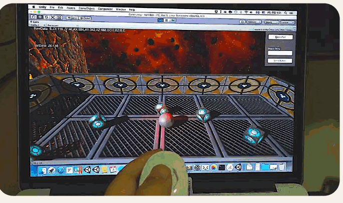
Unity + Serial
영상
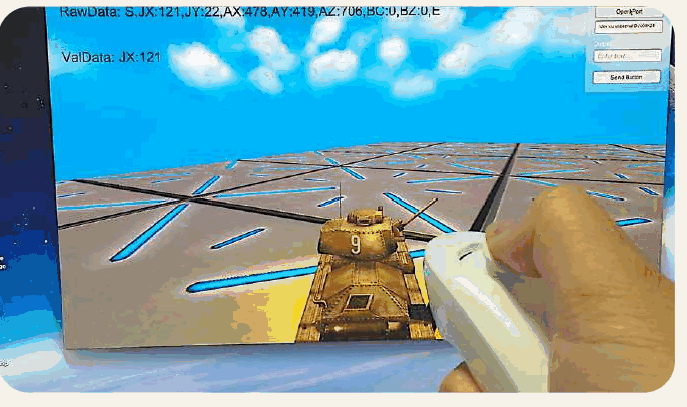
Wiimote Serial
영상
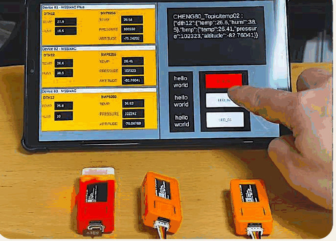
MQTT-SSL + ESP32
영상
08 / 23
Flutter, Flame, Web Build
Rummi Poker
보드형 덱빌딩 로그라이트 게임입니다.
카드 조합과 룰 기반 판단을 구현했고, BIC에 출품하고 웹 빌드도 공개했습니다.
- Flutter/Flame 게임 구현
- 보드형 카드 조합 플레이
- 웹 데모 공개
- BIC 출품 페이지 등록
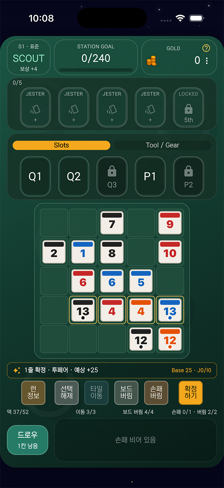

09 / 23
Flutter, Flame, PocketBase
Stone Match
8×8 보드에서 같은 보석을 맞추는
매치 3 퍼즐 게임입니다.
세 가지 모드와 콤보, 특수 보석을 구현했습니다.
- 무한, 레벨, 타임 3모드
- 콤보와 특수 보석 효과
- PocketBase 랭킹 연동
- Apps in Toss 광고 연동 구현
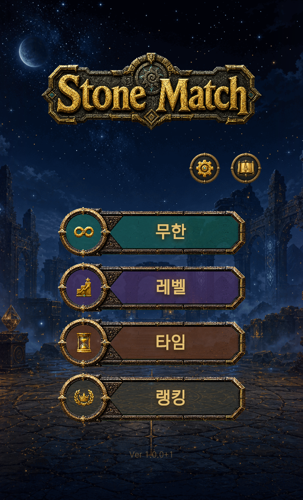

10 / 23
AI 활용 개발 환경GAME DEVELOPMENT
AI 에이전트로 구성한 개발, 검증, 배포 환경
에이전트 오케스트레이션부터 게임별 자동 플레이 검증 도구와 배포 스크립트까지 구축
Stone MatchRummi PokerFlutter / Flame
Codex 작업 조정
↓
Claude Sonnet 로그 기록
Claude Sonnet 시간 측정
↓
Claude Opus 게임 통합
↓
Claude Opus 별도 코드 검수
구현과 분리해 읽기 전용으로 코드 검수
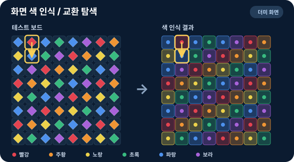
Stone Match더미 화면

Rummi Poker설명용 주석
게임별 검증 도구와 검증 기록 보존
웹 릴리즈 빌드↓
소스맵 등록↓
NAS 업로드↓
배포 응답 확인↓
소스맵 등록 실패 시 중단, 배포 파일에서 소스맵 제외
11 / 23
자동 플레이 검증 도구 제작STONE MATCH / RUMMI POKER
두 게임의 자동 플레이 검증 도구 제작
게임의 입력 방식과 진행 구조에 맞춘 검증 도구를 AI와 함께 각각 제작
검증 과정을 설명하는 예시 화면
Stone Match
화면 픽셀의 색으로 보석을 구분해 교환할 곳을 찾고 실제 드래그와 종료 결과를 확인
Rummi Poker
타일 배치와 아이템 사용, 정산과 상점 선택을 이어가며 스테이지 진행 확인
12 / 23
Rummi Poker AI 활용 개발 사례RUMMI POKER
밸런스 시뮬레이터와 분석 도구 제작
AI를 활용해 게임 규칙을 조건별로 반복 실행하는 시뮬레이터와 결과를 한국어 문서로 정리하는 리포트 도구를 제작
Rummi PokerDart / Python개발 도구 제작
게임 규칙과 카드 데이터
→조건별 반복 실행
→결과 저장과 집계
→한국어 리포트 생성
설정할 수 있는 조건
- 난이도와 전투 구간
- 초기 카드와 아이템
- 플레이 정책, 반복 횟수, 시드
분석할 수 있는 항목
- 클리어율과 실패 유형
- 평균 턴
- 첫 득점과 마지막 득점, 조합별 집계
실제 코드 구성
- Dart 시뮬레이션 실행기
- Python 한국어 리포트 생성기
- 입력 거절, 같은 시드 재현, 집계 테스트
13 / 23
Rummi Poker 추가 AI 활용 사례RUMMI POKER
생성형 AI 카드 아트 제작 파이프라인
카드 데이터와 공통 아트 지침으로 이미지 생성 프롬프트를 만들고, 생성 결과를 작은 카드 화면에서 검토
Rummi Poker생성 이미지 97개와 카드 크기 미리보기 보존
카드 데이터
→
공통 아트 지침
→
카드별 프롬프트
→
이미지 일괄 생성
→
축소 미리보기
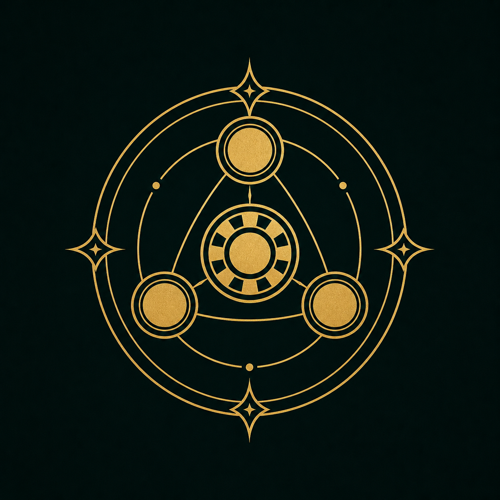
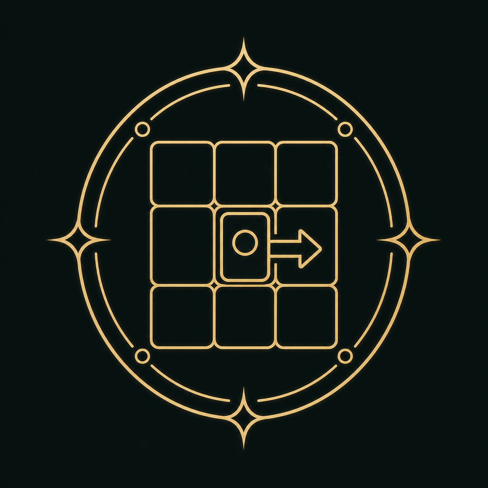
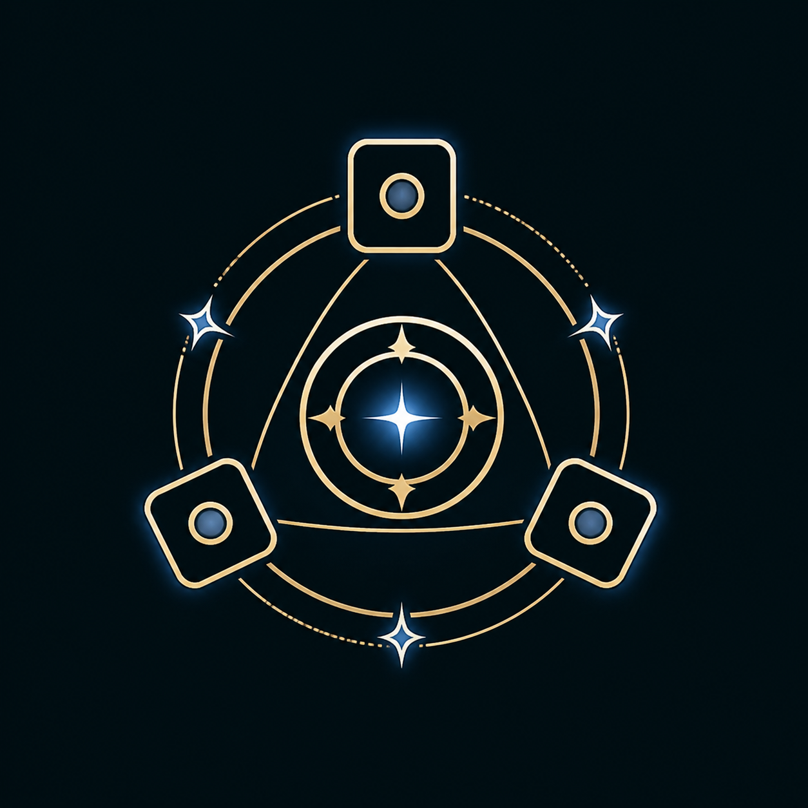

14 / 23
Flutter, Flame
순서대로 탭탭
1 to 50 게임 룰을 바탕으로 무작위 숫자나 알파벳을 빠르게 순서대로 눌러 시간을 겨루는 순발력 퍼즐 게임입니다.
- Flutter Flame 엔진
- 숫자/알파벳 순서 클릭
- 웹 데모 제공
- GitHub 공개
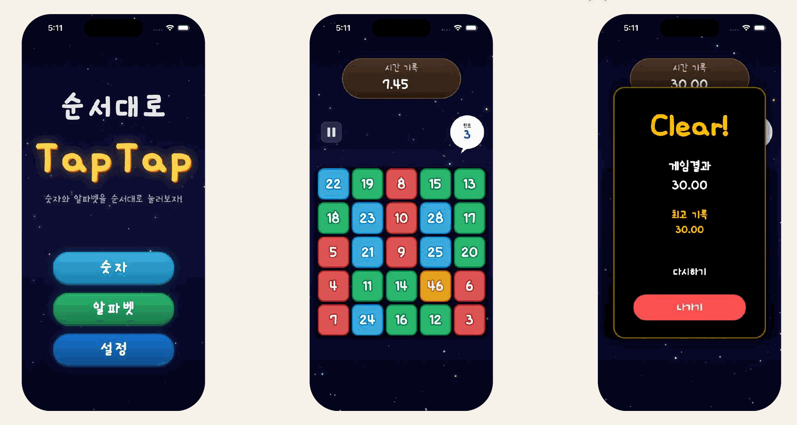
15 / 23
Flutter App, Store Released
TagDo
태그로 할 일을 나누어 관리하는 앱입니다. 업무, 개인, 공부 등 기본 태그와 커스텀 태그, 필터, 검색, 드래그 정렬, 로컬 알림을 지원합니다.
- Flutter + FastAPI
- Riverpod + Hive
- 다국어 ko/en/ja/zh
- Google Play / App Store 출시

16 / 23
Flutter App, Store Released
HabitCell
일별 기록, 히트맵, Streak 분석을 제공하는 습관 추적 앱입니다.
습관별 목표, 카테고리, 알림, 기간별 통계를 지원합니다.
- Flutter + FastAPI
- Riverpod + MySQL + SQLite
- 히트맵 테마 7종
- 다국어 및 라이트/다크 테마
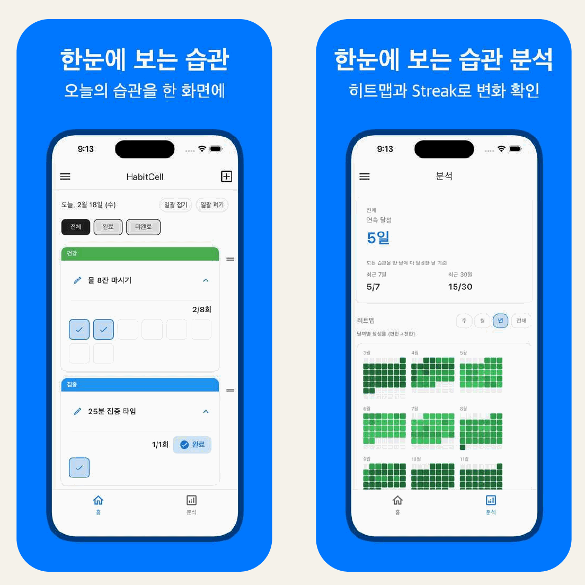
17 / 23
Flutter, FastAPI, ML, 출시 준비 중(심사 중)
GlucoInsight
성인 당뇨 위험도 참고 예측과 병원 찾기를 돕는 건강관리 앱입니다. 입력값으로 ML 예측 엔진을 실행하고, 주변 병원 검색과 길 찾기를 연결합니다.
- ML 기반 위험도 참고 예측
- 공공데이터 API
- 카카오 주소/좌표 API
- 지도 앱 길 찾기 연동

18 / 23
Flutter, FastAPI, WebSocket, 출시 준비 중
SyncFlow
2~5인 팀이 쓰는 가벼운 실시간 협업 칸반 보드 앱입니다. 카드 이동, 담당자 변경, 멘션, 초대 코드, Soft Lock을 구현했습니다.
- WebSocket 실시간 동기화
- FCM 원격 푸시
- 6자리 초대 코드
- 카드 편집 Soft Lock
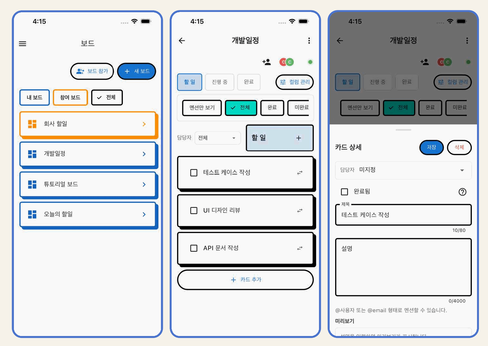
19 / 23
Flutter Client, FastAPI Backend, RAG
무장애 관광 챗봇
지역, 접근성, 제외 조건을 분석한 뒤 TourAPI 조회 결과를 저장 자료로 보완해 관광지 추천을 카드로 보여주는 챗봇의 로컬 실행형 프로토타입입니다.
1. 질문 분석지역, 조건, 제외 의도 분리
2. API 조회TourAPI 기반 실시간 결과 확인
3. RAG 보완ChromaDB와 Markdown 자료 검색
4. 추천 카드출처와 주의 문구를 포함한 응답
20 / 23
Chatbot RAG, Internal Structure
질문을 추천 카드로
바꾸는 처리 과정
TourAPI가 응답하지 않으면 저장 자료를 검색해
추천 근거와 주의 문구를 보여줍니다.
입력 정규화지역, 접근성, 제외 조건을 구조화
외부 API 우선TourAPI 응답이 있으면 최신 관광 데이터를 반영
RAG fallbackChromaDB와 Markdown 자료로 API 지연과 실패 보완
카드형 응답관광지 요약, 조건 매칭, 출처, 주의 문구 표시
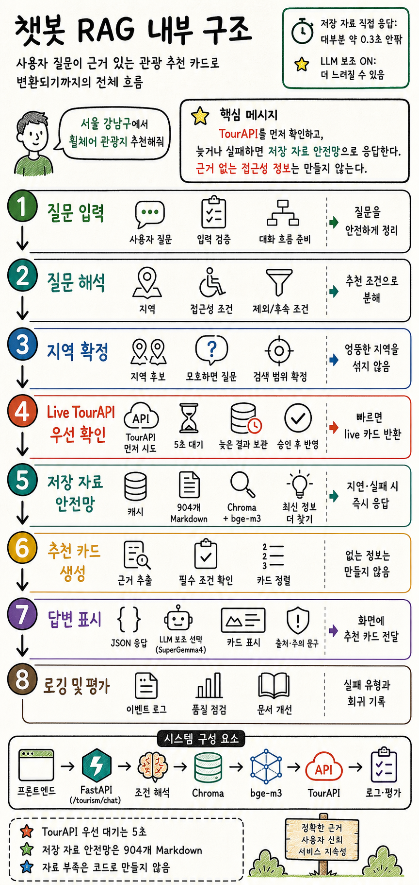
21 / 23
Archive Projects
Lua / ActionScript 아카이브
Lua, ActionScript, 스마트 TV 등 여러 플랫폼에서 게임과 인터랙티브 콘텐츠를 만들었습니다.

Lua Games
생명의 빛 - Touch 바이블, ATTACK "Z", Line Pang
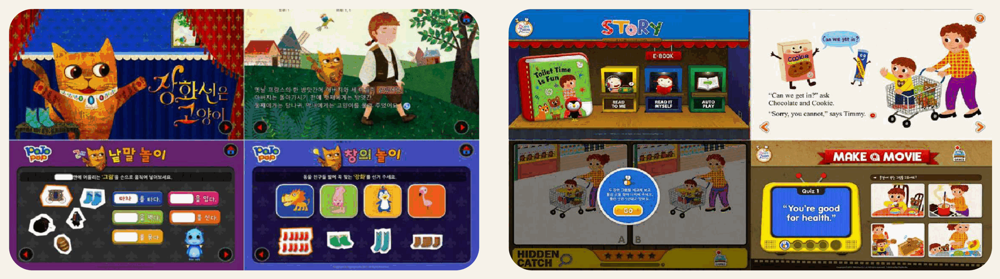
ActionScript App Book
시공미디어 앱북 시리즈, 시사붐붐잉글리쉬 앱북 시리즈
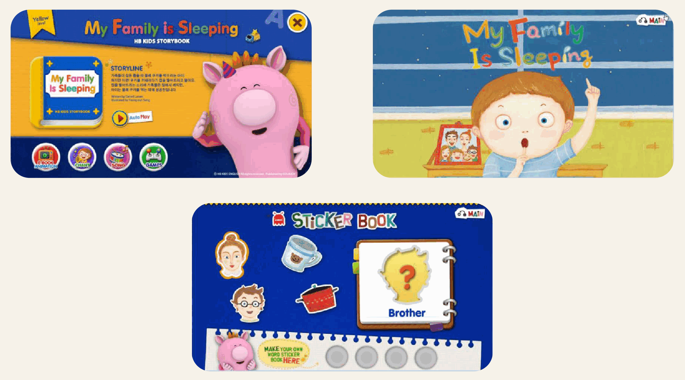
LG Smart TV
시사 잉글리쉬 HB Kids 시리즈
22 / 23
Repository / Materials
감사합니다
앱 스크린샷과 영상 자료, 저장소 접속 정보를 확인할 수 있습니다.
23 / 23